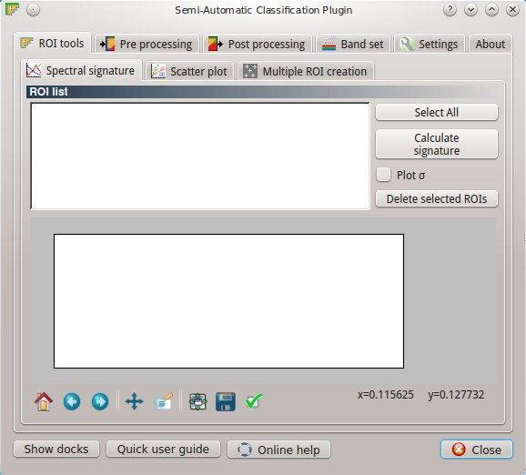
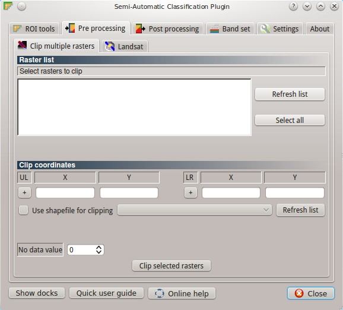
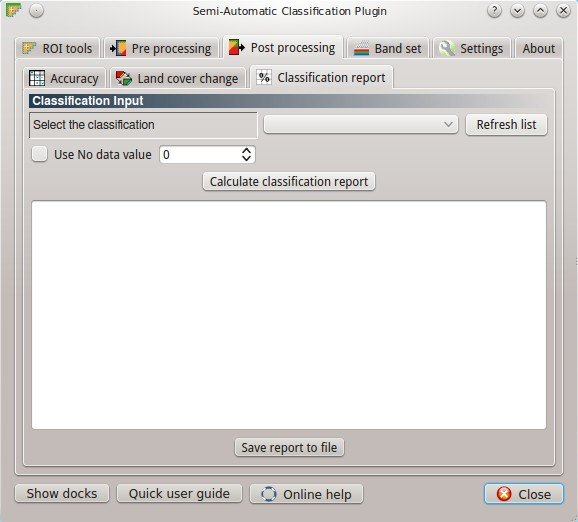
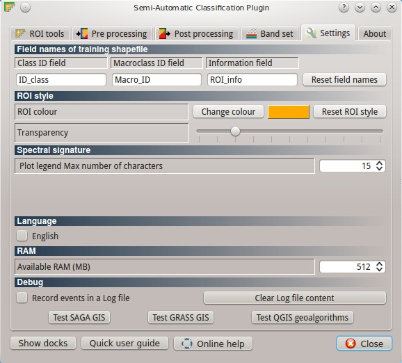

3.3. Main Interface Window¶
The Main Interface window includes several pre processing and post processing functions such as: plot of ROI spectral signatures and scatter plot of ROIs; multiple ROI creation at once using point list; clipping of multiple rasters at once using coordinates or a shapefile boundary; Landsat pre processing for automatic conversion to reflectance and temperature; accuracy assessment; land cover change calculation; classification report; band set definition; and advanced settings.
The Main interface is composed of several tabs:
3.3.1. ROI tools tab¶
The ROI tools tab includes the Spectral signature calculation and visualization. The Scatter plot tab allows for the calculation of the ROI scatter plots, which are useful to assess ROI separability choosing between two bands. Pixel values for two raster bands are represented as points in the 2D space. The Multiple ROI creation which allows for the automatic creation of ROIs, given a list of points (coordinates) and class definitions. This can be useful for the rapid classification of multi-temporal images, or for creating several ROIs using GPS data from field survey.
3.3.1.1. Spectral signature tab¶
3.3.1.1.1. ROI signatures¶
- [ Select all ]: select all ROIs for plot;
- [ Calculate signature ]: calculate statistics for selected ROIs (using the raster selected in the ROI tool tab);
- ☑ Plot σ: if checked, plot the standard deviation for each ROI;
- [ Delete selected ROIs ]: delete selected ROIs.
3.3.1.2. Scatter plot tab¶

3.3.1.2.1. ROI list¶
- [ Select all ]: select all ROIs for plot;
- < Band X >: X band of the plot;
- < Band Y >: Y band of the plot;
- [ Calculate scatter plot ]: calculate the scatter plot (it can be time consuming).
3.3.1.3. Multiple ROIs tab¶
3.3.1.3.1. Point coordinates and ROI definition¶
- X : point X coordinate;
- Y : point Y coordinate;
- Macroclass ID : ROI ID which corresponds to the fields Macro_ID;
- Class ID : ROI ID which corresponds to the fields ID_class;
- Information : ROI information which corresponds to the field ROI_info;
- [ Add point ]: add a row for a new point to the table; the table fields X coordinate, Y coordinate, ID and Information must be filled for the ROI creation;
- [ Remove highlighted points ]: delete the rows of selected points;
- [ Import point list ]: import a point list from text file to the table; every line of the text file must contain X coordintate, Y coordinate, ID and Information separated by tabs;
- [ Export point list ]: export the point list to text file;
- [ Create and save ROIs ]: create and save ROIs to shapefile;
- ☑ Calculate signature: if checked, calculate the spectral signature for ROI (the ROI mean value for each raster band); this configuration is stored in the QGIS project.
3.3.2. Pre processing tab¶
The Pre processing tab allows for the Clipping of multiple rasters at once, using point coordinates or a shapefile. Also, the Landsat tab allows for the conversion of Landsat images from DN (i.e. Digital Numbers) to the physical measure of Top Of Atmosphere reflectance (TOA), or the application of a simple atmospheric correction using the DOS1 method (Dark Object Subtraction 1), which is an image-based technique (for more information about the Landsat conversion to TOA and DOS1 correction, see Landsat image conversion to reflectance and DOS1 atmospheric correction).
3.3.2.1. Clip multiple rasters tab¶
3.3.2.1.1. Raster list¶
- [ Refresh list ]: refresh layer list;
- [ Select all ]: select all the rasters to be clipped.
3.3.2.1.2. Clip coordinates¶
- [+]: click on the map for the definition of the Upper Left (UL) and Lower Right (LR) point coordinates (X and Y) for clipping;
- ☑ Use shapefile for clipping: if checked, select a shapefile for clipping;
- < No data value >: set the value for ‘No data’ pixels (e.g. outside the clipped area);
- [ Clip selected rasters ]: open a window for choosing output destination, and clip selected rasters saving them in the selected directory.
3.3.2.2. Landsat tab¶

3.3.2.2.1. Landsat conversion to TOA reflectance and brightness temperature¶
- [ Select a directory ]: select a directory where Landsat bands (filenames thereof must end with the respective number) and the metafile (a .txt file whit the suffix MTL) are stored; all bands found in the directory are converted automatically (band numbers are identified for Landsat 4, 5, 7, and 8);
- [ Select a directory ]: select a directory where converted bands are saved;
- ☑ Brightness temperature in Celsius : if checked, convert brightness temperature to Celsius (default is Kelvin);
- ☑ Apply DOS1 atmospheric correction : if checked, the DOS1 atmospheric correction is applied to all the bands (thermal bands excluded);
- ☑ Use No data value : if checked, No data values are not counted during the DOS1 calculation of DNmin (for more information about the Landsat conversion to TOA and DOS1 correction, see Landsat image conversion to reflectance and DOS1 atmospheric correction);
- [ Perform conversion ]: convert Landsat bands and save them in the output directory.
3.3.3. Post processing tab¶
The Post processing tab provides the abilities to perform the Accuracy assessment (by GRASS GIS r.kappa), comparing a classification to a reference shapefile, and to calculate the Land cover change (by SAGA GIS change detection) between two classifications. Also, the Classification report allows for the calculation of class statistics in pixel, percentage and area.
3.3.3.1. Accuracy tab¶

3.3.3.1.1. Error Matrix Input¶
- ⇓ Select the classification to assess ⇓: select a classification raster;
- ⇓ Select the reference shapefile ⇓: select a shapefile, used as reference layer (ground truth) for the accuracy assessment;
- [ Calculate error matrix ]: calculate the error matrix, that will be displayed in this tab;
- [ Save error matrix to file ]: save error matrix to a text file.
3.3.3.2. Land cover change tab¶

3.3.3.2.1. Classification input¶
- ⇓ Select the reference classification ⇓: select a reference classification raster;
- ⇓ Select the new classification ⇓: select a new classification raster, to be compared with the reference classification;
- ☑ Report unchanged pixels: if checked, report also unchanged pixels;
- [ Calculate land cover change ]: save the land cover change raster to a .tif file, and a .csv table containing statistics in the same folder and with the same name defined for the .tif file.
3.3.3.3. Classification report tab¶
3.3.3.3.1. Classification input¶
- ⇓ Select the classification ⇓: select a classification raster;
- [ Refresh list ]: refresh raster list;
- ☑ Use No data value : if checked, No data values are not counted in the report;
- [ Calculate classification report ]: calculate the report and show it;
- [ Save report to file ]: save the report in a .csv file.
3.3.4. Band set tab¶

3.3.4.1. Band list¶
- [ Refresh list ]: refresh raster band list;
- [ Select all ]: select all raster bands;
- [ Add rasters to set ]: add selected rasters to the band set; the band set is stored in the QGIS project.
3.3.4.2. Band set definition¶
- [ Clear all ]: clear all bands from band set;
- [ ↑ ]: move selected bands upward;
- [ Remove band ]: remove selected bands from the band set;
- [ ↓ ]: move selected bands downward;
- [ Import ]: import a previously saved band set from file;
- [ Export ]: export the band set to a file.
3.3.5. Settings tab¶
The Settings tab allows for the name customization of the training shapefile’s required fields, which is useful for using any existing shapefile containing training polygons. Also, the Settings tab contains debugging utilities for testing the installation of the several dependencies (SAGA GIS, GRASS GIS) and for the creation a log file.
3.3.5.1. Field names of training shapefile¶
- [ Macroclass ID field ]: name of the Macroclass ID field (default is Macro_ID);
- [ Class ID field ]: name of the ID field (default is ID_class);
- [ Information field ]: name of the Information field (default is ROI_info);
- [ Reset field names ]: reset field names to default.
3.3.5.2. ROI style¶
- [ Change colour ]: change ROI colour; this configuration is stored in the QGIS registry;
- [ Reset ROI style ]: reset ROI colour and transparency to default;
- [- Transparency -]: change ROI transparency; this configuration is stored in the QGIS registry.
3.3.5.3. Spectral signature¶
- < Plot legend Max number of characters >: limit the text length of ROIs’ names in the spectral plot legend.
3.3.5.4. Language¶
- ☑ English : default language is English; if unchecked, the plugin is set to local language if available.
3.3.5.5. RAM¶
- < Available RAM (MB) >: set the available RAM (in MB) that will be used during the processes; this configuration is stored in the QGIS registry.
3.3.5.6. Debug¶
- ☑ Records events in a log file : start recording events in a log file (saved in the user folder in .qgis/python/plugins/SemiAutomaticClassificationPlugin/__0semiautomaticclass.log ); this configuration is stored in the QGIS registry;
- [ Clear log file content ]: clear the content of log file;
- [ Test SAGA GIS ]: test if SAGA GIS is properly installed and configured;
- [ Test GRASS GIS ]: test if GRASS GIS is properly installed and configured;
- [ Test QGIS geoalgorithms ]: test if QGIS geoalgorithms are properly configured.
The following is a video about the Post processing tab:
http://www.youtube.com/embed/B6zElHi2Pnk?rel=0&start=764